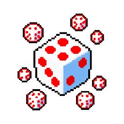

#27 · weapon_27MegabonkDiceНаша иконкаFatecubeКуб судьбыЭффект оригинала в MegabonkУрон зависит от броска 1–6; шестёрки навсегда увеличивают шанс крита.ИсточникНаш PNG · 27Связь по ID · JSONОсновной — актуальный · weapons-current64 px32 px